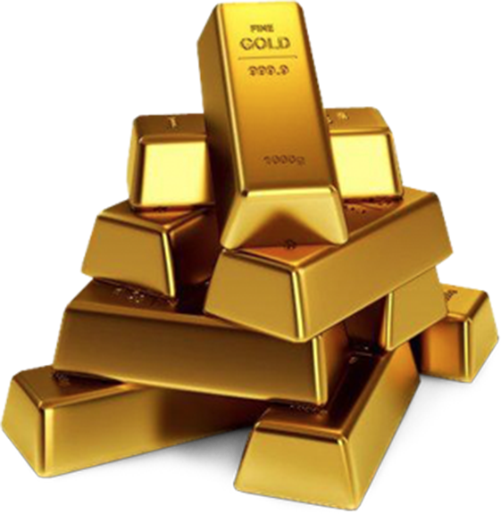
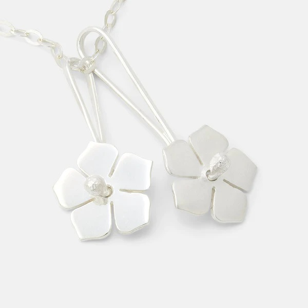
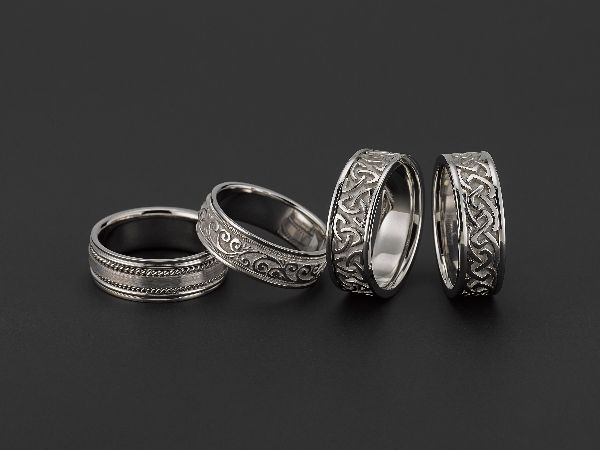
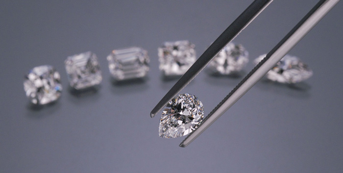
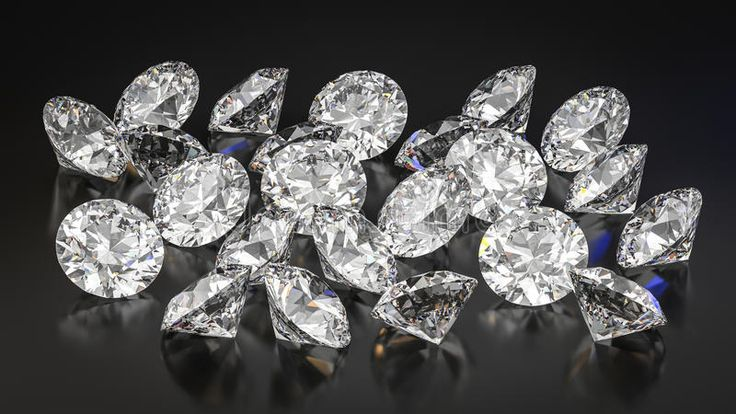
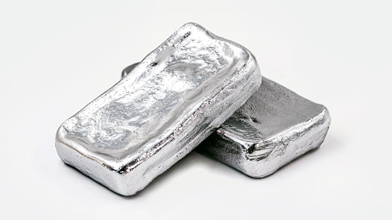
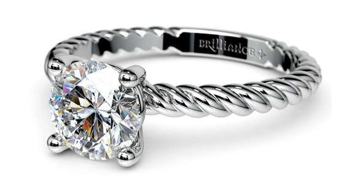

ABOUT GOLD
.jpg)

Gold is a yellow precious metal, used in jewellery and decoration and to guarantee the value of currencies.
This metal has been a valuable and highly sought after precious metal for coinage, jewellery,
and other arts since long before the beginning of recorded history.
A total of 174,100 tonnes of gold have been mined in human history.
The world consumption of new gold produced is about 50% in jewellery, 40% in investments, and 10% in industry.
Besides its widespread monetary and symbolic functions, gold has many practical uses in dentistry, electronics, and other fields.
Its high malleability, ductility, resistance to corrosion and most other chemical reactions, and conductivity of electricity have led to many uses,
including electric wiring, colored-glass production, and gold leafing.
ABOUT SILVER


Sterling silver is simply an alloyed form of silver which is much more suitable to use in jewellery and other metalwork.
Fine silver is 99.9% pure silver.
In this form the metal is beautiful and suffers from minimal tarnish, but it's generally too soft and malleable for many uses,
including making most silver jewellery.
Instead fine silver is alloyed with copper to create sterling silver, which is 92.5% pure silver and 7.5% copper.
This percentage of fine silver is why you will sometimes see sterling silver referred to as '925 silver' or hallmarked with a 925 stamp.
The copper makes the silver harder, more durable and therefore much better to work with and use, but without compromising on colour.
Most silver jewellery that you buy and wear will be sterling silver.
ABOUT DIAMOND


A natural diamond’s creation began around 100 miles below the Earth’s surface.
Each natural diamond is made of pure carbon, compressed by Earth’s pressure over time,
and is the hardest substance on earth that exists naturally.
Today, there are many synthetic and laboratory-grown diamonds on the market.
These are also made of carbon, but without the Earthly origins of real diamonds,
they lack the unique diamond qualities infused by nature.
The first diamond was discovered in an Indian cave nearly 4,000 years ago. But the diamond journey? That began billions of years before. The stones you see in diamond jewelry today began forming from one to three billion years ago, making a natural diamond the oldest thing you’ll ever touch. A natural diamond’s markings and inclusions are symbols of their age, and can be considered small time capsules that tell stories of the Earth’s formation.
ABOUT PLATINUM


Platinum’s strength surpasses both gold and silver and assures your most precious diamonds and gemstones will be protected and secured. Platinum is one of the strongest, most enduring and densest metals. In fact, a piece of jewelry containing 90-percent pure platinum weighs 60 percent more than a 14-karat gold piece of similar size.
Platinum jewelry has a high level of purity that makes it naturally hypoallergenic, making it the perfect choice for people with sensitive skin. In the United States, platinum jewelry generally contains 85- to 95-percent pure platinum. By comparison, 14-karat gold is only 58.3-percent pure gold. Jewelry marked only “Platinum,” “Pt” or “Plat” contains at least 95-percent pure platinum. Platinum content can also be marked by 999 for 99.9% pure platinum, 950 for 95% and so on. In the U.S., jewelry containing less than 50-percent pure platinum cannot be marked with the word “Platinum” or any abbreviation there of.